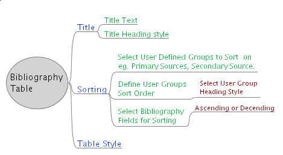
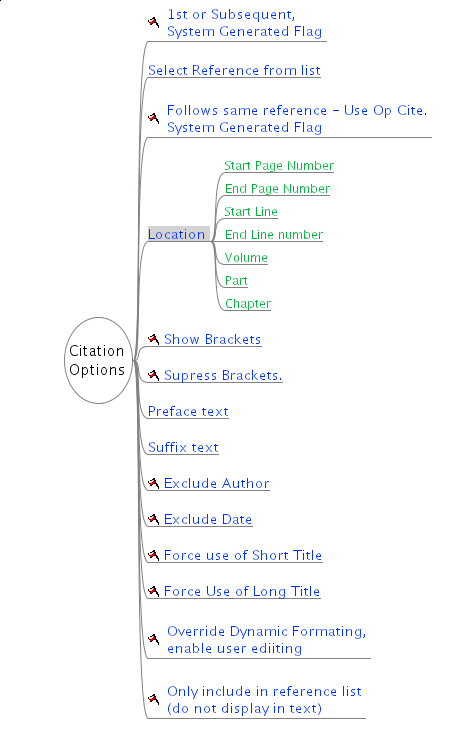

An New Approach to Bibliographic Content Analysis
Last Updated: 29th May 2005
Discussion
| Following on from the ideas discussed about a new approach to the OOoBib user interface. I have started a new analysis of the decision structure and attributes of a bibliographic system. However, not starting from library catalogue data as is usually done but from the Style Guide of the type the user might be attempting to implement / use. I extracted the information and descision points that the Style Guide considered important. I am using a mindmap program called freemind (the developent version 0.8.0 RC3) to collect and organise the data. (It is a java program so should run on most systems) A high level graphic diagram of my first effort is shown bwlow. This provide some interesting insights and starts to suggest some user interface options |
{kind=link}
High-Level view of a Bibliographic Style Content Analysis using FreeMind.
Click on the Image to see the large full and expanded Image (330BK).
| In the Expanded
Image the Red Flag entries represent Descisions (that have no
particular data requirements) that the user needs to make about the
bibliographic format to be used (so they are possible radio-buttons
in the GUI). The descision paths with out flags mostly have data
elements that are associated with them.
A good way to Browse the information is through the the HTML data export version that has 'clickable' javascript nodes (click on the [-] and [+} symbols). (This is on my DNW's web site because OOo's site stops the javascript working) Matthias Basler suggested the idea that in dealing with Persons we could select a person from our list and then assign their relationship to the referenced work. I thought their would be several relationships like Author, editor etc. but I have come up with 34 ! (see the list on the left) and there are sure to more. So this approach is much better than having 34+ data entry boxes for each type of person ! Most of these are relationships shown are those that Bibliographic system needs to use in constructing the correct Bibliographic entries from my style guide (Based on the Chicago Manual of Style). I have made up a few of the for illustration purposes i.e. Video and Audio as I have not looked at the comprehensive style guide - I will do that soon. Of course most of these 'Person' relationships are only relevant to particular reference types. For example probably only Video & Audio have 'Performed by Person(s)' & 'Produced by Person(s)' and 'Recording Engineer Person(s)'.  A start on Bibliographic Table Options |
---------------------------- |
| A start On Citation Options | ||
|  |